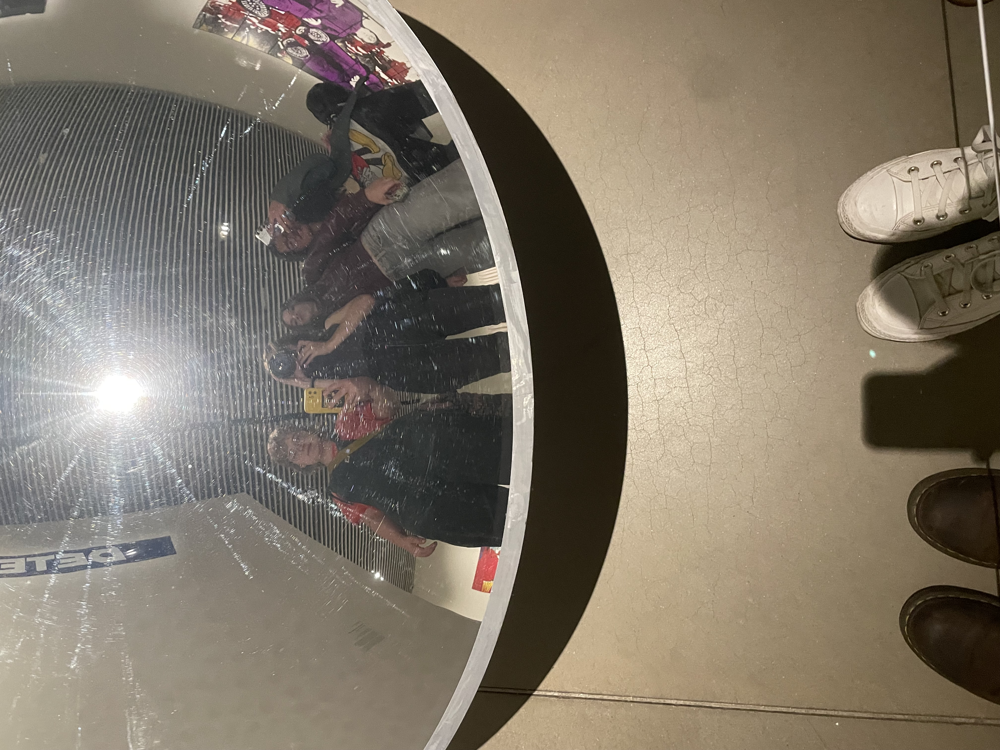
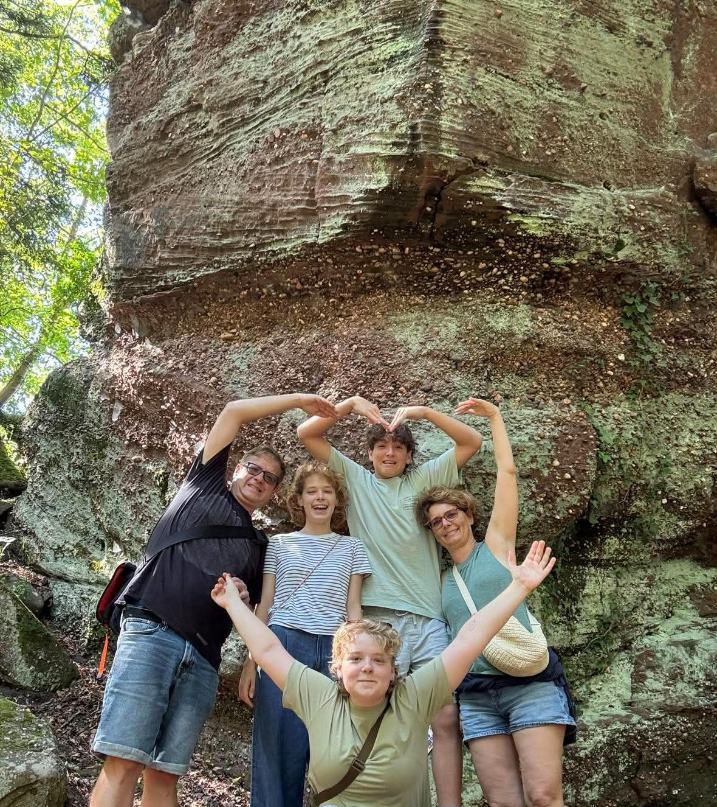

BOGI DOBOS

Húsznegyven Egyesület is a civic organization in Budaörs, Hungary, working at the intersection of architecture, urban planning and local community-building. They run exhibitions, talks, workshops and community design sessions to get residents engaged with their built environment, host concerts, theatre, film and PechaKucha nights, and run a year-round architecture club and summer camps for kids. Their home base, the Zichy Major complex, holds a 200m² exhibition space, a café and a courtyard that doubles as an incubator for local initiatives.
I worked with them on POZITÍV — Építész Szüret 9, an exhibition on urban sustainability and public wellbeing built around Scandinavian best-practice examples across five themes — healthy city, circular city, low-carbon city, movement-based city and resilient city. I helped turn those five themes into a gamified, interactive installation inviting locals to map them onto real sites in Budaörs, and designed posters for several of their events.

App design
Blå Sol
Blå Sol is a non-profit, volunteer-run music festival in Randers built on community, nostalgia and summer vibes. Working with a teammate, I designed a companion app aimed at drawing in more 18+ visitors — a loyalty-points system, a filterable event schedule and festival-ground wayfinding, all wrapped in a bold pink-and-navy identity built around Bowlby One and Poppins.
Illustration series
Arts
Figure drawings
Charcoal and pencil life-drawing studies from figure sessions — working from observation on pose, weight and light.
Street sketches
Buildings drawn on location — quick pen sketches and a colored-pencil study of an old market hall.

Posters
Event posters for talks, exhibitions and competitions.

UX / web design
Coffee & Connect
An exam project for young coffee enthusiasts in Aarhus who want to discover high-quality cafés and connect with others who share the same passion. Desk research into local cafés (mapped by atmosphere, price, quality and accessibility) shaped a website where users explore cafés with confidence, arrange coffee meet-ups, join café-organized events, and share their own experiences and photos in a profile.


Contact me!
Who Am I
A few sides of me

General
21, from Hungary, barista by trade.
- I'm 21, from Hungary
- I'm a barista — I love making coffee
- I love art, and I love working with colors
- I love rock music
- My favorite architect is Le Corbusier — I'm drawn to modernism
- I speak English, Hungarian and Danish
Why multimedia design? It's the connection between people and design — all the opportunities it opens up to put what I make into action.
Team Player
Better work happens together.
I'm a good listener and an empathetic, creative team builder. My strengths are personal connection, speaking, design, colors and creativity. Classmates describe me as an out-of-the-box thinker, a problem solver, a colorful personality, a happy person and creative.

Personality
I'm an ENFP-T — "The Campaigner"
Extraverted, Intuitive, Feeling, Prospecting — Turbulent. It means I'm curious and people-driven, I connect ideas and people easily, and I lead with empathy and imagination over strict planning. Campaigners are warm, enthusiastic, and genuinely care about others — which tracks with being a team player who likes bold, colorful, community-minded work.

Family
Home keeps me grounded.
I get all my skills, ideas and motivation from my family. Growing up with architect parents, I was introduced to art, design and architecture at a very young age. I was raised to take in arts and to express myself through them. For me, life is about impression — not about fitting in.
Dreams
In five years...
In five years I see myself still working with people, still working with design — and hopefully doing something with architecture too. My most important skills are working with colors, drawing, working with people and getting ideas. I'm passionate about colors, design, gamification, architecture, interactive design and interactivity.